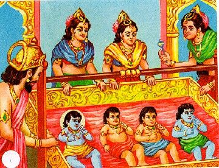
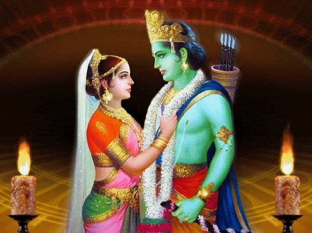
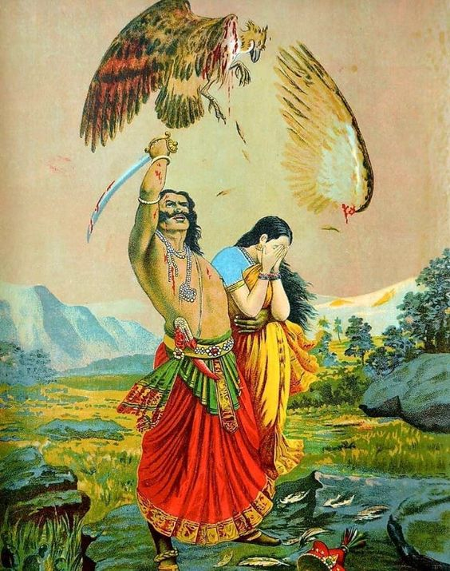

In the ancient city of Ayodhya, where the air was infused with spirituality and the rivers echoed tales of divine deeds, King Dasharatha and Queen Kaushalya ruled with benevolence. Their hearts ached for an heir to the throne. One day, the sage Vasishtha arrived at the royal court and prophesied that the king's prayers would be answered. Kaushalya would give birth to four sons, and the eldest, Ram, would be the embodiment of virtue and righteousness. As the years passed, the kingdom of Ayodhya flourished, and the bond between the brothers—Ram, Bharat, Lakshman, and Shatrughna—deepened. Ram, with his unwavering commitment to dharma, became the pride of Ayodhya.
Word of Sita, the beautiful princess of Mithila, spread far and wide. Her father, King Janaka, announced a grand swayamvara, a ceremony where suitors could compete for Sita's hand. Ram, accompanied by his brothers, accepted the challenge. In a test of strength, Ram effortlessly strung the divine bow of Lord Shiva, winning Sita's hand in marriage. Yet, the joyous occasion was marred by the scheming of Kaikeyi, Dasharatha's second queen. Manipulated by her maid Manthara, Kaikeyi demanded that Ram be sent into exile for fourteen years. Despite Dasharatha's anguish, Ram accepted the decree with unwavering obedience. Sita and Lakshman, devoted to Ram, chose to accompany him into the forest.
The forest exile unfolded as a journey of self-discovery, where the trio encountered sages, demons, and divine beings. In one fateful encounter, Surpanakha, a demoness smitten by Ram, approached him. When her advances were spurned, she sought revenge, leading to a chain of events that culminated in the abduction of Sita by the demon king, Ravana. Ram, driven by love and duty, allied with the vanara (monkey) warrior Hanuman and an army of loyal beings to rescue Sita from Lanka. The story unfolds in a crescendo of bravery, divine interventions, and moral dilemmas. As the chapter concludes, Ram stands at the threshold of war, ready to confront Ravana and rescue Sita, illustrating the eternal battle between good and evil.
